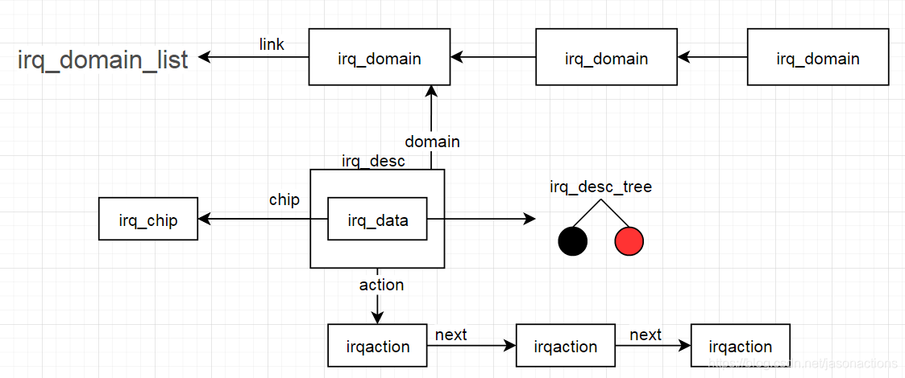
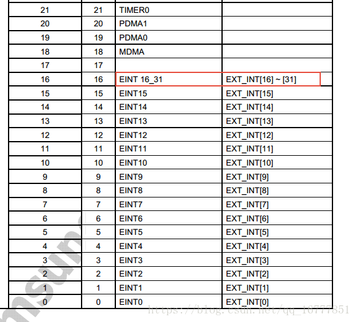
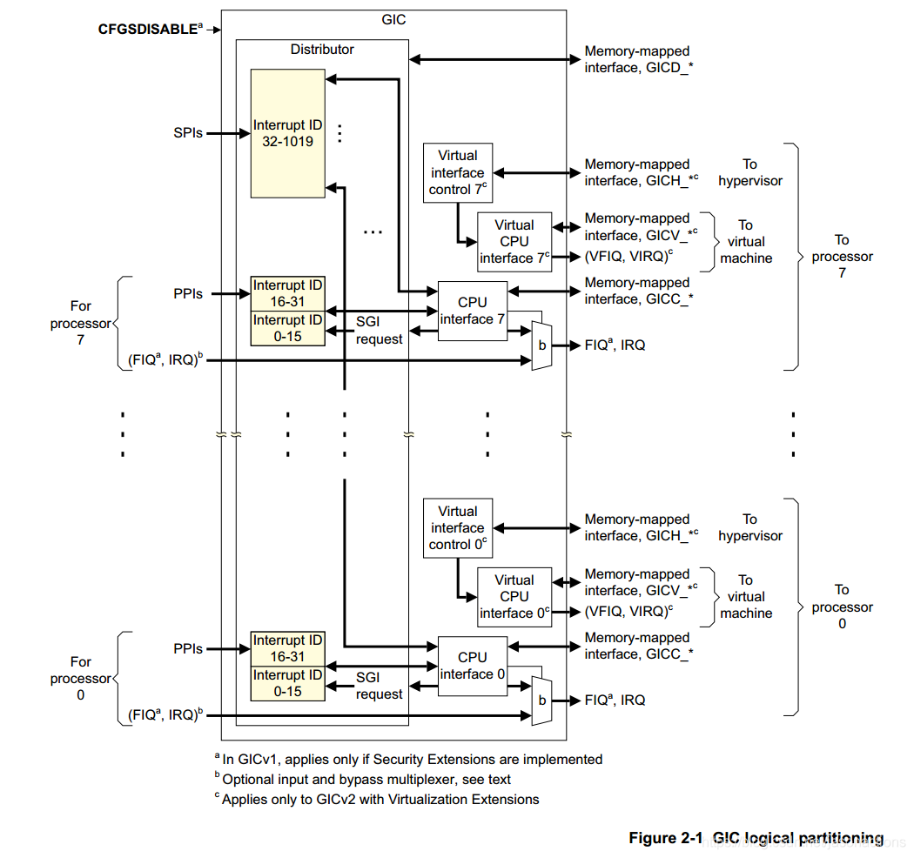
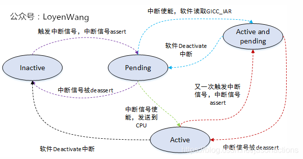
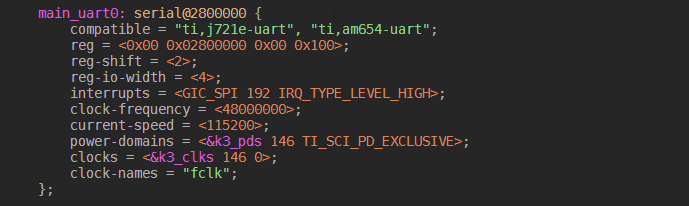

4.4.4. linux 中断框架
4.4.4.1. 数据结构
中断管理主要数据结构

4.4.4.1.1. irq_desc中断描述符
每个中断都有一个中断描述符
irq_desc在include/linux/irqdesc.h中定义
/**
* struct irq_desc - interrupt descriptor
* @irq_common_data: per irq and chip data passed down to chip functions
* @kstat_irqs: irq stats per cpu
* @handle_irq: highlevel irq-events handler
* @preflow_handler: handler called before the flow handler (currently used by sparc)
* @action: the irq action chain
* @status: status information
* @core_internal_state__do_not_mess_with_it: core internal status information
* @depth: disable-depth, for nested irq_disable() calls
* @wake_depth: enable depth, for multiple irq_set_irq_wake() callers
* @tot_count: stats field for non-percpu irqs
* @irq_count: stats field to detect stalled irqs
* @last_unhandled: aging timer for unhandled count
* @irqs_unhandled: stats field for spurious unhandled interrupts
* @threads_handled: stats field for deferred spurious detection of threaded handlers
* @threads_handled_last: comparator field for deferred spurious detection of theraded handlers
* @lock: locking for SMP
* @affinity_hint: hint to user space for preferred irq affinity
* @affinity_notify: context for notification of affinity changes
* @pending_mask: pending rebalanced interrupts
* @threads_oneshot: bitfield to handle shared oneshot threads
* @threads_active: number of irqaction threads currently running
* @wait_for_threads: wait queue for sync_irq to wait for threaded handlers
* @nr_actions: number of installed actions on this descriptor
* @no_suspend_depth: number of irqactions on a irq descriptor with
* IRQF_NO_SUSPEND set
* @force_resume_depth: number of irqactions on a irq descriptor with
* IRQF_FORCE_RESUME set
* @rcu: rcu head for delayed free
* @kobj: kobject used to represent this struct in sysfs
* @request_mutex: mutex to protect request/free before locking desc->lock
* @dir: /proc/irq/ procfs entry
* @debugfs_file: dentry for the debugfs file
* @name: flow handler name for /proc/interrupts output
*/
struct irq_desc {
struct irq_common_data irq_common_data;
struct irq_data irq_data; //每个irq和芯片数据传递给芯片功能
unsigned int __percpu *kstat_irqs;
irq_flow_handler_t handle_irq; //高级irq-events处理程序
#ifdef CONFIG_IRQ_PREFLOW_FASTEOI
irq_preflow_handler_t preflow_handler;
#endif
struct irqaction *action; /* IRQ action list */
unsigned int status_use_accessors; //状态信息
unsigned int core_internal_state__do_not_mess_with_it; //核心内部状态信息
unsigned int depth; /* nested irq disables */
unsigned int wake_depth; /* nested wake enables */
unsigned int tot_count;
unsigned int irq_count; /* For detecting broken IRQs */
unsigned long last_unhandled; /* Aging timer for unhandled count */
unsigned int irqs_unhandled;
atomic_t threads_handled;
int threads_handled_last; //
raw_spinlock_t lock; //锁定SMP
struct cpumask *percpu_enabled;
const struct cpumask *percpu_affinity;
#ifdef CONFIG_SMP
const struct cpumask *affinity_hint;
struct irq_affinity_notify *affinity_notify;
#ifdef CONFIG_GENERIC_PENDING_IRQ
cpumask_var_t pending_mask;
#endif
#endif
unsigned long threads_oneshot;
atomic_t threads_active;
wait_queue_head_t wait_for_threads;
#ifdef CONFIG_PM_SLEEP
unsigned int nr_actions;
unsigned int no_suspend_depth;
unsigned int cond_suspend_depth;
unsigned int force_resume_depth;
#endif
#ifdef CONFIG_PROC_FS
struct proc_dir_entry *dir; //proc irq procfs条目
#endif
#ifdef CONFIG_GENERIC_IRQ_DEBUGFS
struct dentry *debugfs_file;
const char *dev_name;
#endif
#ifdef CONFIG_SPARSE_IRQ
struct rcu_head rcu;
struct kobject kobj;
#endif
struct mutex request_mutex;
int parent_irq;
struct module *owner;
const char *name; //proc interrupt输出的中断处理名称
} ____cacheline_internodealigned_in_smp;
4.4.4.1.2. irq_data
/**
* struct irq_data - per irq chip data passed down to chip functions
* @mask: precomputed bitmask for accessing the chip registers
* @irq: interrupt number
* @hwirq: hardware interrupt number, local to the interrupt domain
* @common: point to data shared by all irqchips
* @chip: low level interrupt hardware access
* @domain: Interrupt translation domain; responsible for mapping
* between hwirq number and linux irq number.
* @parent_data: pointer to parent struct irq_data to support hierarchy
* irq_domain
* @chip_data: platform-specific per-chip private data for the chip
* methods, to allow shared chip implementations
*/
struct irq_data {
u32 mask; //预先计算的位掩码，用于访问芯片寄存器
unsigned int irq; //中断号
unsigned long hwirq; //硬件中断号，中断域本地
struct irq_common_data *common; //
struct irq_chip *chip; //低级中断硬件访问
struct irq_domain *domain; //中断域
#ifdef CONFIG_IRQ_DOMAIN_HIERARCHY
struct irq_data *parent_data;
#endif
void *chip_data;
};
/*
* Interrupt flow handler typedefs are defined here to avoid circular
* include dependencies.
*/
struct irq_desc;
struct irq_data;
typedef void (*irq_flow_handler_t)(struct irq_desc *desc); //handle_irq中断处理函数
typedef void (*irq_preflow_handler_t)(struct irq_data *data);
//函数指针，通常是我们要实现的
typedef irqreturn_t (*irq_handler_t)(int, void *);
/**
* struct irqaction - per interrupt action descriptor
* @handler: interrupt handler function
* @name: name of the device
* @dev_id: cookie to identify the device
* @percpu_dev_id: cookie to identify the device
* @next: pointer to the next irqaction for shared interrupts
* @irq: interrupt number
* @flags: flags (see IRQF_* above)
* @thread_fn: interrupt handler function for threaded interrupts
* @thread: thread pointer for threaded interrupts
* @secondary: pointer to secondary irqaction (force threading)
* @thread_flags: flags related to @thread
* @thread_mask: bitmask for keeping track of @thread activity
* @dir: pointer to the proc/irq/NN/name entry
*/
struct irqaction {
irq_handler_t handler; //中断处理函数
void *dev_id; //用于识别设备的cookie
void __percpu *percpu_dev_id; //用于识别设备的cookie
struct irqaction *next; //指向共享中断的下一个irqaction指针
irq_handler_t thread_fn; //用于线程中断的中断处理函数
struct task_struct *thread; //线程中断的线程指针
struct irqaction *secondary;
unsigned int irq; //中断号码
unsigned int flags; //
unsigned long thread_flags; //与thread相关的标志
unsigned long thread_mask; //用于跟踪thread活动的位掩码
const char *name; //设备名称
struct proc_dir_entry *dir; //指向proc irq NN name条目的指针
} ____cacheline_internodealigned_in_smp;
中断标志位
#define IRQF_TRIGGER_NONE 0x00000000
#define IRQF_TRIGGER_RISING 0x00000001 //上升沿中断
#define IRQF_TRIGGER_FALLING 0x00000002
#define IRQF_TRIGGER_HIGH 0x00000004 //高电平中断
#define IRQF_TRIGGER_LOW 0x00000008
#define IRQF_TRIGGER_MASK (IRQF_TRIGGER_HIGH | IRQF_TRIGGER_LOW | \
IRQF_TRIGGER_RISING | IRQF_TRIGGER_FALLING)
#define IRQF_TRIGGER_PROBE 0x00000010
#define IRQF_SHARED 0x00000080 //允许多个设备之间共享irq
#define IRQF_PROBE_SHARED 0x00000100 //当呼叫着期望发生共享不匹配时由呼叫者设置
#define __IRQF_TIMER 0x00000200 //定时器中断标志
#define IRQF_PERCPU 0x00000400 //中断是每个CPU
#define IRQF_NOBALANCING 0x00000800 //用于从irq平衡中排除此中断的标志
#define IRQF_IRQPOLL 0x00001000 //用于轮询
#define IRQF_ONESHOT 0x00002000
#define IRQF_NO_SUSPEND 0x00004000
#define IRQF_FORCE_RESUME 0x00008000
#define IRQF_NO_THREAD 0x00010000
#define IRQF_EARLY_RESUME 0x00020000
#define IRQF_COND_SUSPEND 0x00040000
#define IRQF_TIMER (__IRQF_TIMER | IRQF_NO_SUSPEND | IRQF_NO_THREAD)
irq_chip
irq_chip用于描述中断控制器底层操作相关的函数操作集合
struct irq_chip { //硬件中断描述符
struct device *parent_device;
const char *name; //proc/interrupt的名称
unsigned int (*irq_startup)(struct irq_data *data); //启动中断
void (*irq_shutdown)(struct irq_data *data); //关闭中断
void (*irq_enable)(struct irq_data *data);
void (*irq_disable)(struct irq_data *data);
void (*irq_ack)(struct irq_data *data); //开始新的中断
void (*irq_mask)(struct irq_data *data); //屏蔽中断源
void (*irq_mask_ack)(struct irq_data *data);
void (*irq_unmask)(struct irq_data *data);
void (*irq_eoi)(struct irq_data *data); //中断结束
int (*irq_set_affinity)(struct irq_data *data, const struct cpumask *dest, bool force); //在SMP机器上设置亲和力
int (*irq_retrigger)(struct irq_data *data); //向CPU重启发送IRQ
int (*irq_set_type)(struct irq_data *data, unsigned int flow_type); //设置IEQ的流类型(IRQ_TYPE_LEVEL)
int (*irq_set_wake)(struct irq_data *data, unsigned int on); //启用/禁用IRQ的电源管理
void (*irq_bus_lock)(struct irq_data *data); //用于锁定对慢速总线(I2c)芯片的访问功能
void (*irq_bus_sync_unlock)(struct irq_data *data); //用于同步和解锁慢速总线芯片的功能
void (*irq_cpu_online)(struct irq_data *data); //为辅助CPU设置中断源
void (*irq_cpu_offline)(struct irq_data *data);
void (*irq_suspend)(struct irq_data *data);
void (*irq_resume)(struct irq_data *data); //恢复时从核心代码调用的函数
void (*irq_pm_shutdown)(struct irq_data *data);
void (*irq_calc_mask)(struct irq_data *data);
void (*irq_print_chip)(struct irq_data *data, struct seq_file *p);
int (*irq_request_resources)(struct irq_data *data);
void (*irq_release_resources)(struct irq_data *data);
void (*irq_compose_msi_msg)(struct irq_data *data, struct msi_msg *msg);
void (*irq_write_msi_msg)(struct irq_data *data, struct msi_msg *msg);
int (*irq_get_irqchip_state)(struct irq_data *data, enum irqchip_irq_state which, bool *state);
int (*irq_set_irqchip_state)(struct irq_data *data, enum irqchip_irq_state which, bool state);
int (*irq_set_vcpu_affinity)(struct irq_data *data, void *vcpu_info);
void (*ipi_send_single)(struct irq_data *data, unsigned int cpu);
void (*ipi_send_mask)(struct irq_data *data, const struct cpumask *dest);
int (*irq_nmi_setup)(struct irq_data *data);
void (*irq_nmi_teardown)(struct irq_data *data);
unsigned long flags;
};
通常我们所说的中断可以分为两种，一种是内部中断(定时器，串口，i2c等)，另一种是外部中断(GPIO+触发类型),内部中断是由固定的独立的中断号的。而外部中断，因为数量较多， 每个单独占用一个的话特别浪费中断资源，所以有些外部中断是有单独的中断号的，而另外一些则是多个端口共享一个中断号

4.4.4.2. 中断控制器
linux内核中断管理分层架构:
硬件层: CPU和中断控制器的连接
处理器架构管理层: 如CPU中断异常处理
中断控制器管理层: 如IRQ号的映射
linux内核通用中断处理器层: 如中断注册与中断处理
4.4.4.2.1. 中断控制器

GIC中断控制器由两部分组成，distributor和cpu interface
distributor 集中管理所有中断源
配置中断的优先级
设置每个中断可路由的CPU列表
向每个CPU interface配送最高优先级的中断
中断屏蔽、中断抢占
配置中断时边缘触发还是水平触发
cpu interface是GIC连接到CPU的接口，每个cpu interface提供了一个编程接口，主要功能包括
使能中断请求信号到CPU
acknowledging 中断，表示CPU接收到中断请求
指示中断的处理完成
设置处理器中断优先级，高于此优先级方可发送给处理器
设置处理器的抢占策略
确定处理器的最高优先级待处理中断
支持的中断类型
中断类型 |
硬件中断号范围 |
含义 |
应用场景 |
SGI私有软件触发中断 |
0~15 |
用于核间通信 |
通常用于多核通信 |
PPI私有外设中断 |
16~31 |
处理器私有中断 |
如CPU本地时钟Local timer |
SPI公用外设中断 |
32~1019 |
用用外设中断 |
用用外设中断，如SPI,I2C，IO等 |
中断状态
inactive(不活跃)状态：中断处于无效状态；
pending(等待)状态：中断处于有效状态，但是等待CPU响应该中断；
active(活跃)状态：CPU已经响应中断；
active and pending(活跃并等待)状态：CPU正在响应中断，但是该中断源又发送中断过来
转换图如下

备注
GIC总是会选择优先级最高的pending的中断发送给CPU，通过cat /proc/interrupts可以查看当前平台的中断源
4.4.4.3. 虚拟中断号和硬中断号
虚拟中断号
<include/asm-generic/irq.h>
/*
* NR_IRQS is the upper bound of how many interrupts can be handled
* in the platform. It is used to size the static irq_map array,
* so don't make it too big.
*/
#ifndef NR_IRQS
#define NR_IRQS 64
#endif
<kernel/irq/internals.h>
#ifdef CONFIG_SPARSE_IRQ
# define IRQ_BITMAP_BITS (NR_IRQS + 8196)
#else
# define IRQ_BITMAP_BITS NR_IRQS
#endif
<kernel/irq/irqdesc.c>
static DECLARE_BITMAP(allocated_irqs, IRQ_BITMAP_BITS);
linux定义了位图来管理这些虚拟中断号，allocated_irqs变量分配了IRQ_BITMAP_BOTS个bit位，每个bit位代表一个中断
硬件中断号
0~31中断号给了SGI和PPI
其他外设中断号会从32开始
dts中会用interrupts = <硬中断号n>来指定硬件中断号，真正的硬中断号为32+n

cat /proc/interrupts看到的是实际的硬件中断号，即转换完成的
备注
dts中interrupts域主要包含三个属性: 1.中断类型:GIC_SPI(共享外设型，用0表示) GIC_PPI(私有外设中断，用1表示) 2.中断ID 3.触发类型:IRQ_TYPE_EDGE_RISING等